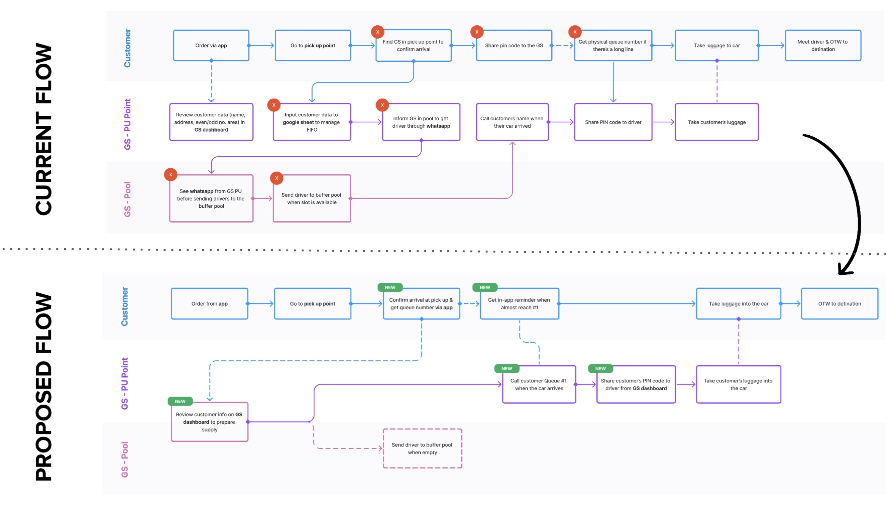
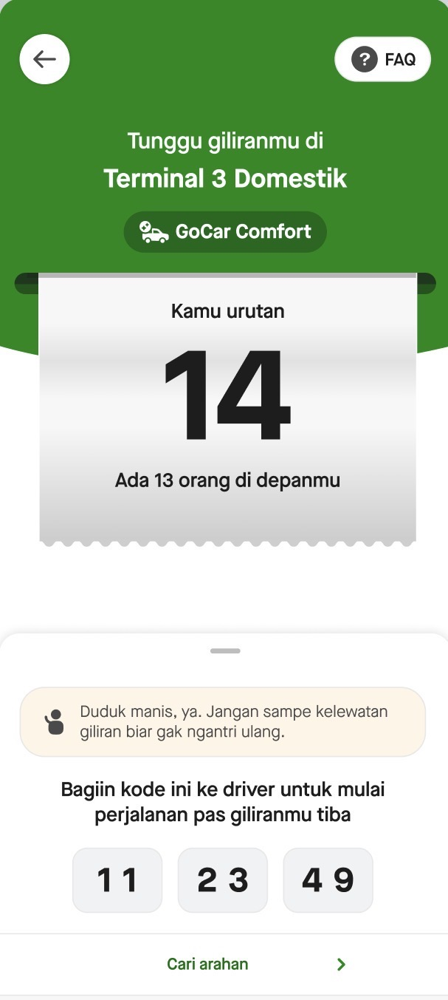

Back
Airport
01 — Case study
Airport
Experience
2023 — 2025 · Gojek Mobility
38% GTV and 71% CO improvement across 2023–2025. Airport vs nation-wide GTV penetration jumped from 9% to 22.3%.
- Role
- Break down historical silos via a design-led end-to-end collaboration model across product groups and functions. Spearhead the overhaul of the out-of-home experience with Marketing, and pull operations flow and procedures into the design scope.
- What’s interesting
-
- Airports are high-AOV, low-CO bookings — they demand timely, accurate dispatch inside complex, site-specific contexts. Getting it wrong is visible and public.
- Product decisions between the consumer flow and the driver flow were historically disparate. This became the model for how design acts as a bridge to ensure holistic experience crafting.
- Why it generalised
- The airport is the hardest version of a problem the whole platform has: two sides of a marketplace, owned by different groups, meeting at a physical place with its own rules. Solving it produced a collaboration model that later work — including GoRide Instant — was able to reuse rather than reinvent.


Role
Head of Design, Mobility
at Gojek
- Transport
- Cartography Platform
- Drivers Platform
- Fulfillment & Allocation
- Fleet
- GoCorp
7Product groups overseen
16Product designers & UX writers led
2Design managers reporting in
4SEA markets — ID, SG, TH, VN
Working weekly across 7 VP & Head of Product, 6 Head of Business, 2 Head of Marketing, 3 Head of Engineering, and the VP of Regions & Operations. That counterpart map is the actual job — the work is getting those functions to hold one strategy from OKR definition through to tactical execution.
“Design acted as the bridge.”
On consumer and driver flows, Portfolio 2026